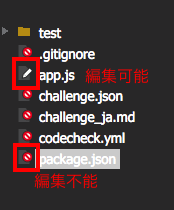

Using The Web Editor
Edit files
Filetypes

You can see the file tree on the left side of the Web Editor.
You can confirm which file is editable or not by seeing the type of file icon.
Follow the instructions in the challenge's README.md and work in the specified files.
Web Editor Settings

The Web Editor has a few settings you can fiddle with.
Click the setting icon if you want to change:
Color theme
Tab key action
Auto Preview
Save Dialog
Execution
Run test
You can run the tests by clicking the run button in the lower right corner of the Web Editor.
- About the test code
- codecheck runs tests by using test frameworks, just like unit tests.
- "Test" does not mean Exam or challenge, but test code to verify whether your program is correct or not.
- Applicants can try to run the publicly available test code.
Preview
The preview feature enables applicants to see the appearance of an application configured with HTML, CSS, and Javascript.
You can see the latest html view automatically without reloading the Web Editor when the 'Auto Preview' setting is checked.
Saving Challenges
Click the "SAVE" button to save the files you edited.

Choose the files that you want to save and click the "OK" button to save files.
About Browsers
See our browser recommendations.